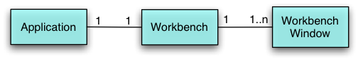

| Eclipse Article |

The Rich Client Platform (RCP) allows you to build Java applications that can compete with native applications on any platform. Part 1 of the tutorial introduced you to the platform and the steps used to build the smallest possible RCP program. In part 2 we'll look at what we did in more detail and introduce some of the configuration classes that let you take control of much of the layout and functionality of an RCP application.
By Ed Burnette, SAS Institute Inc.
June 23, 2004
In Eclipse 2.1, many functions of the Eclipse IDE were hard-wired into the code. These included the name and location of the File menu, the title of the Workbench Window, and the existence of the status bar. This was fine for the IDE but when people started to use Eclipse as a basis for non-IDE programs, sometimes these things didn't make sense. Although all the source code was provided, it was inconvenient to find the right places that had to be changed. So for Eclipse 3, the designers refactored the API to make these and other hard-wired aspects of the user interface controllable through public API.
To this end, Eclipse 3 introduces a brand new
WorkbenchAdvisor class and a set of
*Configurer interfaces.
The most important class for an RCP developer to understand is
WorkbenchAdvisor.
You extend the base version of the WorkbenchAdvisor class
in your RCP application and override one or more of the methods
to set whatever options you want.
In part 1, we implemented one of the simpler methods,
getInitialWindowPerspectiveId,
in order to return the one and only perspective (set of views, editors, and menus)
for the application.
In the next section we'll take a look at the other advisor methods to get a quick overview of what is possible with them. If you want to cut to the chase and look at or download the code for this part you can view the Eclipse project here.
Otherwise, let's start by clearing up some possible confusion about the relationship between Applications, Workbenches, and Workbench Windows.
The Application is a class you create that acts as your RCP program's main routine. You can think of it as the controller for the program. Just like the controller in a Model2 architecture, it is short and sweet and doesn't change significantly for different projects. All it does is create a Workbench and attach a Workbench Advisor to it.
The Workbench is declared and maintained for you as part of the RCP framework. There is only one Workbench but it can have more than one visible top-level Workbench Window. For example, in the Eclipse IDE, when you first start Eclipse you will see one Workbench Window, but if you select Window > New Window a second window pops up -- two Workbench Windows, but only one Workbench.
Figure 1 shows the relationship between your Application, the Workbench, and Workbench Windows.
Figure 1. An RCP program has one Application class that you provide, and one Workbench class provided by the framework. Typically there is only one Workbench Window but the framework supports having more than one.
Ok, now that that's out of the way, let's get our feet wet with changing how the Workbench Window looks.
The simple example in part 1 left room for a status line, tool bar, and
other visual elements even though they weren't used.
We could argue that those should be off by default, but
for some reason they're not so if you don't want them
then you have to turn them off yourself.
Also the window didn't have a title and it
opened much larger than it needed to be.
A good place to take care of all
this is the preWindowOpen method
of WorkbenchAdvisor,
as shown in listing 1.
Listing 1. preWindowOpen example.
public void preWindowOpen(IWorkbenchWindowConfigurer configurer) {
super.preWindowOpen(configurer);
configurer.setInitialSize(new Point(400, 300));
configurer.setShowCoolBar(false);
configurer.setShowStatusLine(false);
configurer.setTitle("Hello, RCP");
}
Notice how a Configurer interface (in this case, IWorkbenchWindowConfigurer)
is passed in to the advisor method.
You call methods on the Configurer interfaces to actually
change the options.
These interfaces are not covered in any detail in this tutorial
but you can refer to their Javadoc for more information.
See figure 2 for the final result.
Figure 2. Workbench window with a title.
Unused controls are turned off and a title is added using the
preWindowOpen event of
WorkbenchAdvisor.
WorkbenchAdvisor class
Since RCP is new and documentation is sparse,
we're going to depart from our tutorial format at this point to
examine some background information about the
WorkbenchAdvisor class.
Methods in this class are called from the platform to
notify you at every point in the lifecycle of the Workbench
and top level Workbench Windows.
They also provide a way to handle exceptions in the
event loop,
and provide important parameters to the Workbench such as
the default perspective.
First let's take a look at the lifecycle events.
 Why not an interface?
You'll notice that
Why not an interface?
You'll notice that WorkbenchAdvisor is an abstract class.
For the most part, Eclipse APIs shun abstract classes in favor of interfaces and
base classes that implement those interfaces.
In this case, the designers intend for WorkbenchAdvisor
to always be implemented
by the RCP application, the base class doesn't contain any significant functionality,
and it is very likely that new methods will need to be added to the base class in the
future (something that is difficult using interfaces).
So this was a deliberate design choice.
See the article on evolving Java APIs in the reference section
for more tips.
There is only one Workbench, and
typically there is also only one Workbench Window, though you can open
more than one if you like (on different monitors for example).
See figure 3 for the most important events in the lifetime of
Workbenches and their windows.
Table 1 shows all the methods that you can define in your
own subclass of WorkbenchAdvisor to let you
hook into lifecycle events for the Workbench.
Table 2 shows the corresponding methods for
Workbench Windows.
Figure 3. Important events in the lifecycle of the Workbench and Workbench Window(s).
These correspond to methods in WorkbenchAdvisor that are called by the Platform
to let you perform custom code at these points in time.
Table 1.
Workbench lifecycle hooks provided by org.eclipse.ui.application.WorkbenchAdvisor.
| Method | Description | Parameter(s) | ||||||||||||
|---|---|---|---|---|---|---|---|---|---|---|---|---|---|---|
| initialize | Called first to perform any setup such as parsing the command line, registering adapters and declaring images. | IWorkbenchConfigurer |
Table 2.
Workbench window lifecycle hooks provided by org.eclipse.ui.application.WorkbenchAdvisor.
| Method | Description | Parameter(s) |
|---|---|---|
| preWindowOpen | Called in the constructor of the Workbench Window. Use this method to set options such as whether or not the window will have a menu bar. However none of the window's widgets have been created yet so they can't be referenced in this method. | IWorkbenchWindowConfigurer
|
| fillActionBars | Called right after preWindowOpen.
This is where you set up any hard-wired menus and toolbars.
This is probably the most complicated method here because of the flags
it is passed.
Note: takes a Workbench window, not a configurer.
| IWorkbenchWindow,
IActionBarConfigurer, flags
|
| postWindowRestore | Optionally called for cases when a window has been restored from saved state but before it is opened. | IWorkbenchWindowConfigurer
|
| postWindowCreate | Called after a window has been restored from saved state or created from scratch but before it is opened. | IWorkbenchWindowConfigurer
|
| openIntro | Called immediately before a window is opened in order to create the Intro component (if any). Could be used for other things like a login screen. | IWorkbenchWindowConfigurer
|
| postWindowOpen | Called right after the Workbench window is opened. Can be used to tweak any of the window's widgets, for example to set a title or change its size. | IWorkbenchWindowConfigurer
|
| preWindowShellClose | Called before the Workbench window is closed (technically, before its shell is closed). This is the only function that can veto the close, so it's a good place for an "Are you sure" kind of dialog. | IWorkbenchWindowConfigurer
|
| postWindowClose | Called after the Workbench window is closed
Can be used to clean up anything created by
preWindowOpen.
| IWorkbenchWindowConfigurer
|
The event loop is the code that is running most of the time during the life of the Workbench. It handles all user inputs and dispatches them to the right listeners. RCP provides a couple of hooks to handle crashes and perform work during idle time (see table 3).
Table 3.
Event loop hooks provided by org.eclipse.ui.application.WorkbenchAdvisor.
| Method | Description | Parameter(s) |
|---|---|---|
| eventLoopException | Called if there is an unhandled exception in the event loop. The default implementation will log the error. | Throwable
|
| eventLoopIdle | Called when the event loop has nothing to do. | Display
|
Next, there are few methods you can implement that
the platform will call to get information about your application
(see table 4).
The most important one (and the only one that is not optional)
is getInitialWindowPerspectiveId.
We used this in part 1 to return the id of the starting (and only)
perspective in RcpTest.
Table 4.
Information requests provided by org.eclipse.ui.application.WorkbenchAdvisor.
| Method | Description | Parameter(s) |
|---|---|---|
| getDefaultPageInput | Return the default input for new workbench pages. Defaults to null. | |
| getInitialWindowPerspectiveId | Return the initial perspective used for new workbench windows. This is a required function that has no default. | |
| getMainPreferencePageId | Return the preference page that should be displayed first. Defaults to null, meaning the pages should be arranged alphabetically. | |
| isApplicationMenu | Return true if the menu is one of yours. OLE specific; see Javadoc for details. | IWorkbenchWindowConfigurer,
String
|
The WorkbenchAdvisor events above should be
sufficient for most applications, but just in case,
RCP provides two more methods to take complete control
of how your application windows and controls are created.
They're listed in table 5 for completeness but I
don't expect many programs will need them.
Table 5.
Advanced methods in org.eclipse.ui.application.WorkbenchAdvisor.
| Method | Description | Parameter(s) |
|---|---|---|
| createWindowContents | Creates the contents of one window. Override this method to define custom contents and layout. | IWorkbenchWindowConfigurer,
Shell
|
| openWindows | Open all Workbench windows on startup. The default implementation tries to restore the previously saved workbench state. |
Internationalization (i18n for short) opens up your application to a much wider market. The first step is simply to pull all your human readable text messages out of your code and into a standard format properties file. Even if you are not planning to make your code available in multiple languages, separating the messages makes it much easier for you to spell check them and check them for consistent grammar and word usage.
There's nothing magic about messages in Eclipse - you just use the plain old Java resource bundle mechanism that you may already be familiar with. The Eclipse IDE provides a nice Externalization wizard to make this less of a chore. See the references section below for a link to an article that describes how to use it in detail.
Briefly, when you're writing a new section of code you will often hard-code strings just to get something going. For example, in listing 1 we used:
configurer.setTitle("Hello, RCP");
Once you have a section of code working, though, you should get into the habit of invoking the Externalization wizard to pull these strings out. Simply right click on the project and select Source > Find Strings to Externalize.... Any source files that need attention will be listed. Pick one and press Externalize... to open the Externalization wizard. Follow the directions there to have the wizard convert your code to use a resource bundle reference. Alternatively you could right click on a single source file and select Source > Externalize Strings.... When you're done your source code will look something like this:
configurer.setTitle(Messages.getString("Hello_RCP")); //$NON-NLS-1$
The string $NON-NLS-1$ is a hint for both the compiler and
the Externalization wizard that the first character string on this line
is a tag or keyword of some sort and should not be localized.
Also you will have a standard format .properties file containing the keys and values for all your messages. In the example code you will find a file called RcpTutorial.properties that contains:
Hello_RCP=Hello, RCP
Finally, the wizard will create a class that wraps a Java resource bundle to load and find things in the .properties file.
 To perform substitutions use the standard
To perform substitutions use the standard
java.text.MessageFormat class.
The format() method is somewhat similar
to the C routine sprintf, except
instead of taking format specifiers starting with percent signs,
format() uses numbered parameters in curly braces.
Here's an example from the XMLStructureCreator class in the
compare example plug-in (split onto multiple lines for readability):
bodynode.setName(MessageFormat.format("{0} ({1})",
new String[] {XMLCompareMessages.getString("XMLStructureCreator.body"),
Integer.toString(fcurrentParent.bodies)})); //$NON-NLS-2$ //$NON-NLS-1$
This isn't a good example, though, because typically the format string itself should be in a message file too. However, messages intended to be read by another program (commands, keywords, scripts, and so forth) should not be put in a message file.
To keep these lines from getting incredibly long you will probably want to
create helper methods.
For examples of helper methods see org.eclipse.internal.runtime.Policy.
In part 2 of this tutorial, we looked at some of the newly refactored API of the Rich Client Platform that allows you to develop customized native-looking client-side Java programs. The next part will delve into defining and populating menus and toolbars. All the sample code for this part may be viewed at the Eclipse project here. You can use Eclipse's built-in CVS client to download the source to your workspace.
RCP Tutorial Part 1
RCP Tutorial Part 3
Rich Client Platform Facilities
How to Internationalize your Eclipse Plug-in
Almost All Java Web Apps Need Model 2
(introduction to the Model 2 architecture)
Evolving Java-based APIs
Eclipse Powered (rich client plug-ins and resources)
IBM is trademark of International Business Machines Corporation in the United States, other countries, or both.
Java and all Java-based trademarks and logos are trademarks or registered trademarks of Sun Microsystems, Inc. in the United States, other countries, or both.
Microsoft and Windows are trademarks of Microsoft Corporation in the United States, other countries, or both.
Other company, product, and service names may be trademarks or service marks of others.